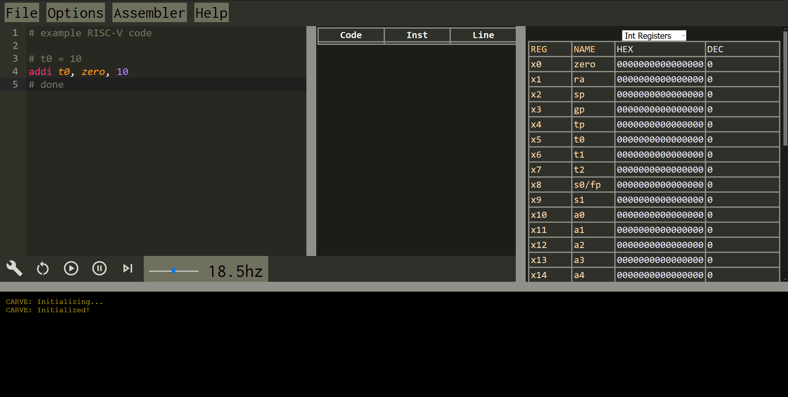
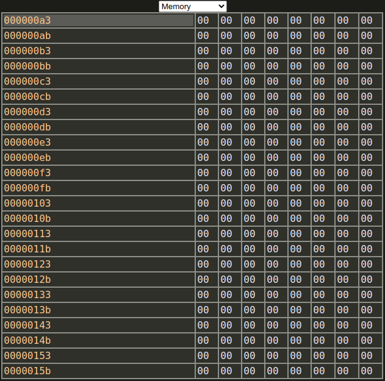
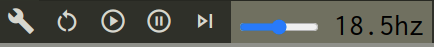

CARVE Help Page
This is the help page for CARVE, the Cade And-greg Risc-V Emulator. The source code is available for free on GitHub.
Many elements on the web IDE can be overed over with a mouse to display a helpful tooltip, describing what the button/control does.
Saving And Loading
To save a file to your computer (the contents are the editor contents), you can use the File > save dialogue. You can then load and restore your editor to a file on your computer via the File > open dialogue
You can also empty the editor with the File > new dialogue.
Basic Layout

Text Editor
You can edit text in the text editor. Write RISC-V assembly, then click the ‘run’ button below the text editor to assemble and run the program.
Output Console
You can view the output of the assembling process, as well as the execution process in the output console, which is located underneath the text input. You can click the output console to activate the block cursor, at which point you can type on your keyboard to input text.
- Normal white text is standard output
- Red-tinted text is standard error
- Blue-tinted text is standard input
- Orange-tinted text is debug messages
Register View
You can view registers in the register view, which has a few columns (and 1 row per register):
REG: The base ID of the register. For integer registers, this isxand then the numberNAME: The typical human-readable name used for the registerHEX: The value of the register in hex (base-16), zero padded. This way you can inspect all bytesDEC: The value of the register in decimal (base-10)
Memory Explorer
You can change the register view tab to a memory explorer by changing the dropdown selection at the top (which defaults to Int Registers) to Memory. This will show a table of the memory of your program:

The first column is the address, and all other columns on the right are the byte values that come at and after that address. Both the addresses and the byte values are in hex, and each row has 8 bytes (thus, each row’s starting address increases by 8).
The first column in the first row (defaulting to 00000000) is the start address. That field is editable, so just click on that table cell and edit it to whatever hex address you’d like. When you hit Enter/Submit, the memory table will refresh with the memory starting at the address you entered. For example:

Engine Controls

Each of the buttons (the wrench through the >| button) have tooltips that explain what they are and what they do when you hover over them.
BUILD: Assembles the program and resets the memory.
RESET: Assembles the program and resets the memory. (Currently just an alias for the previous button)
PLAY: Executes the assembled instructions in sequence at a specified speed.
PAUSE: Pauses execution of the program.
STEP: Performs a single instruction.
The last input, the slider with a value in hz gives the emulation speed. hz (meaning per second) is the number of clock cycles that the virtual CPU runs. For example, at the default (18.5hz), 18.5 instructions are executed each second (or, once about every 54 milliseconds). The slider can be adjusted to make the emulation faster or slower, which helps with debugging. Or, you can use the skip button to go one instruction at a time (i.e. no automatic speed)
Last updated 2021-04-30